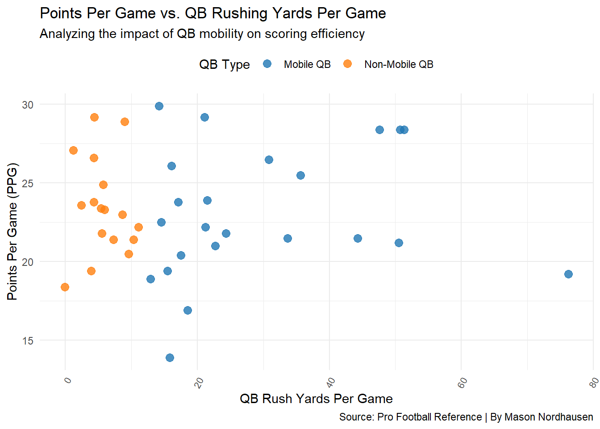
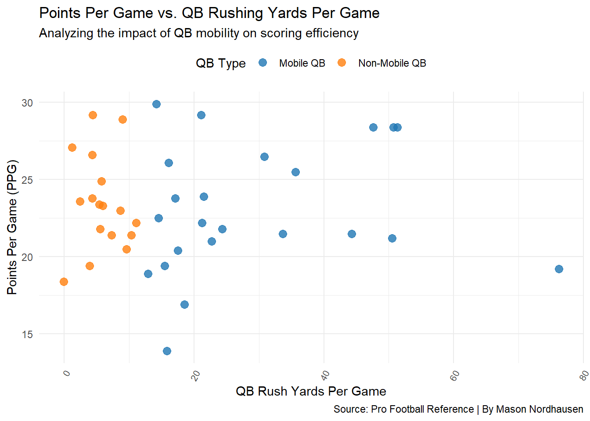

Saving 7 x 5 in imageMason Nordhausen
December 9, 2024
The NFL has changed so much over the past few years, and one thing I’ve noticed is how mobile quarterbacks have started to dominate the conversation. Players like Lamar Jackson, Jalen Hurts, and Josh Allen have brought a new level of excitement to the game, redefining what it means to be a quarterback. These players aren’t just throwing the ball—they’re running, creating plays with their legs, and adding a whole new dynamic to their teams’ offenses. But I started wondering: does all that mobility actually make a difference? Are teams with mobile quarterbacks really more successful, or is it just a flashy trend?
To dig into this, I decided to categorize quarterbacks into two groups: Mobile QBs and Non-Mobile QBs. I used a simple rule, if a quarterback was in the top half of Rush Yards Per Game among all quarterbacks for a season, I classified them as “Mobile.” Everyone else went into the Non-Mobile group. I thought this approach would give me a clear way to see how rushing quarterbacks impact their teams compared to those who mostly stay in the pocket. I also only wanted players that played in the majority of the team’s game so that way team stats are not affected by a backup playing for them (13 games)
To get the data I needed, I turned to Pro Football Reference. I used different tables within the site to pull data on individual quarterback rushing stats, team offensive metrics like points per game (PPG) and total yards, red zone efficiency, and win-loss records. By combining all of this data, I created a single dataset that links quarterback rushing performance to team success. My goal was simple: find out if having a mobile quarterback leads to better offensive production and more wins.
The first thing I wanted to look at was the relationship between quarterback rushing yards and key offensive metrics. My goal was to see if more rushing yards from the QB position correlated with a more productive offense. Below, I’ve put together a scatter plot showing how QB rushing yards connect to points per game, total yards per game, and red zone efficiency.

Saving 7 x 5 in imageFirst scatterplot shows almost no correlation between QB Rush Yards and how many Points Per Game (PPG) the offense scores. We can see around the 20-25 PPG is where most QBs fall into and both Mobile & Non-Mobile QBs have a large portion in that range.
Since there is little correlation between PPG and QB Rush Yards, wanted to next take a look at the Total Yards per game. Since Mobile QBs are dual threat and can help the offense in the air or on the ground does that correlate to the offense being able to pick up more yards over Non-Mobile QB teams.
plot2 <- ggplot(QB_Team_Merged, aes(x = `Y/G`, y = `Total Yards`, color = QB_Type)) +
geom_point(size = 3, alpha = 0.8) +
labs(
x = "QB Rush Yards Per Game",
y = "Total Yards Per Game",
title = "QB Rushing Yards vs Total Yards Per Game",
subtitle = "Exploring the correlation between QB mobility and offensive production",
caption = "Source: Pro Football Reference | By Mason Nordhausen"
) +
scale_color_manual(
name = "QB Type",
values = c("Mobile QB" = "#1f77b4", "Non-Mobile QB" = "#ff7f0e"),
labels = c("Mobile QB", "Non-Mobile QB")
) +
theme_minimal() +
theme(
axis.text.x = element_text(angle = 60, hjust = 1, size = 8),
strip.text = element_text(size = 12),
panel.spacing = unit(2, "lines"),
legend.position = "top"
)
plot2This scatterplot explores the relationship between rushing yards per game and their teams’ total offensive yards per game, comparing Mobile QBs and Non-Mobile QBs. The data suggests that teams with Mobile QBs generally achieve higher total yardage, as evident from the clustering of Mobile QBs above the 6,000-yard mark. Interestingly, the number of teams exceeding 6,000 total yards appears to be nearly tied between Mobile and Non-Mobile QBs, suggesting that mobility alone does not guarantee higher offensive output.
QB_Team_Merged <- QB_Team_Merged %>%
mutate(`RedZone %` = as.numeric(gsub("%", "", `RedZone %`)))
plot3 <- ggplot(QB_Team_Merged, aes(x = `Y/G`, y = `RedZone %`, color = QB_Type)) +
geom_point(size = 3, alpha = 0.8) +
labs(
x = "QB Rushing Yards Per Game",
y = "Red Zone Efficiency (%)",
title = "QB Rushing Yards vs Red Zone Efficiency",
subtitle = "Investigating the influence of QB mobility on red zone success",
caption = "Source: Pro Football Reference | Analysis by Mason Nordhausen"
) +
scale_y_continuous(
breaks = seq(0, 100, by = 10), # Breaks every 10%
labels = function(x) paste0(x, "%") # Append '%' symbol to labels
) +
scale_color_manual(
name = "QB Type",
values = c("Mobile QB" = "#1f77b4", "Non-Mobile QB" = "#ff7f0e"),
labels = c("Mobile QB", "Non-Mobile QB")
) +
theme_minimal() +
theme(
axis.text.x = element_text(angle = 60, hjust = 1, size = 8),
axis.text.y = element_text(size = 8), # Adjust y-axis text size for clarity
strip.text = element_text(size = 12),
panel.spacing = unit(2, "lines"),
legend.position = "top"
)
plot3Red Zone efficiency in the NFL varies widely across teams, and while there may not appear to be a strong direct correlation between quarterback mobility and success in the Red Zone at first glance, a closer examination reveals an important trend. The majority of mobile quarterbacks tend to perform above the 55% efficiency line, whereas a significant number of non-mobile quarterbacks have teams that struggle to exceed this threshold. This suggests that mobility can be a key factor when it matters most. Mobile quarterbacks bring the unique ability to create plays in critical moments, whether by extending passing opportunities or deciding to run when defenses overcommit. This adaptability and playmaking ability highlight a strong connection between mobility and increased efficiency in Red Zone situations, where every decision can make the difference in scoring opportunities.
These cumulative effects raise an intriguing question: how does this translate into overall team success, as measured by Win Percentage? If rushing yards are closely linked to offensive production and efficiency in critical scoring areas, it’s reasonable to explore whether teams with mobile quarterbacks see a tangible advantage in the win column.
ggplot(QB_Team_Merged, aes(x = `Y/G`, y = Win_Percentage, color = QB_Type)) +
geom_point(size = 3, alpha = 0.8) +
labs(
x = "QB Rushing Yards",
y = "Win Percentage",
title = "Win Percentage vs QB Rushing Yards",
subtitle = "Comparing win percentages of Mobile vs Non-Mobile QBs",
caption = "Source: Pro Football Reference | Analysis by Mason Nordhausen"
) +
scale_y_continuous(labels = scales::percent_format(scale = 1)) +
scale_color_manual(
name = "QB Type",
values = c("Mobile QB" = "#1f77b4", "Non-Mobile QB" = "#ff7f0e")
) +
theme_minimal() +
theme(legend.position = "top")The chart highlights a significant distinction between Mobile and Non-Mobile QBs in terms of Win Percentage. Mobile QBs exhibit a much wider range of Win Percentages, from teams in a rebuilding phase to the very top performers. Notably, the top four QBs in terms of Win Percentage are all Mobile QBs, suggesting that elite mobility can translate into on-field success. While Non-Mobile QBs show more consistency and cluster closer together in terms of Win Percentage, their upper limit doesn’t seem to match that of their mobile counterparts.
This supports the idea that while other factors, such as defense and supporting offensive players, contribute to team success, a great Mobile QB can be a game-changer. Teams with lower Win Percentages among Mobile QBs might reflect rebuilding situations, where teams are still constructing a roster to complement their quarterback’s skill set. This variability underscores the potential of Mobile QBs to elevate a team’s ceiling when paired with a strong supporting cast.
While the advantages of Mobile QBs in areas like Win Percentage and Red Zone efficiency, their unique style of play introduces a layer of unpredictability—namely, turnovers. This raises a critical question: does their ability to create outweigh the risks they bring to possession security?
It is important to note that by Turnovers in this graph it is including all fumbles (lost or recovered by the offense). Due to the fact that once that ball comes out it is a 50/50 chance for the offense to recover, which is a risk that needs accounted for/
QB_Team_Merged <- QB_Team_Merged %>%
mutate(Total_Turnovers = `Interceptions Thrown` + Fmb)
ggplot(QB_Team_Merged, aes(x = QB_Type, y = Total_Turnovers, color = QB_Type)) +
geom_jitter(size = 3, alpha = 0.8, width = 0.2) +
labs(
x = "QB Type",
y = "Total Turnover Risks",
title = "The Risk-Reward Balance: Turnovers and Playmaking Between Mobile and Non-Mobile QBs",
subtitle = "Examining the Variability in Turnover Risks Across Different Quarterback Styles",
caption = "Source: Pro Football Reference | By Mason Nordhausen"
) +
scale_color_manual(
values = c("Mobile QB" = "#1f77b4", "Non-Mobile QB" = "#ff7f0e")
) +
theme_minimal() +
theme(legend.position = "none")Mobile QBs tend to have a wider range of total turnovers compared to Non-Mobile QBs, with some Mobile QBs reaching as high as 30 turnovers. In contrast, Non-Mobile QBs are more consistently clustered between 15 and 25 turnovers. This suggests that while Mobile QBs bring added playmaking potential, their aggressive style of play: such as increased rushing attempts and extended plays—may also lead to a higher turnover risk. Non-Mobile QBs, on the other hand, exhibit less variance, likely reflecting a more conservative and predictable approach to the game. This trade-off highlights the balance teams must strike between high-reward mobility and the potential for costly mistakes.
Ultimately, Mobile QBs represent a high-risk, high-reward paradigm in the NFL. Their ability to extend plays and thrive in high-pressure situations can elevate a team’s performance, but it comes at the cost of increased turnover potential. As the NFL continues to evolve, the question isn’t whether Mobile QBs are better or worse—it’s how well teams can harness their unique strengths while minimizing their vulnerabilities.